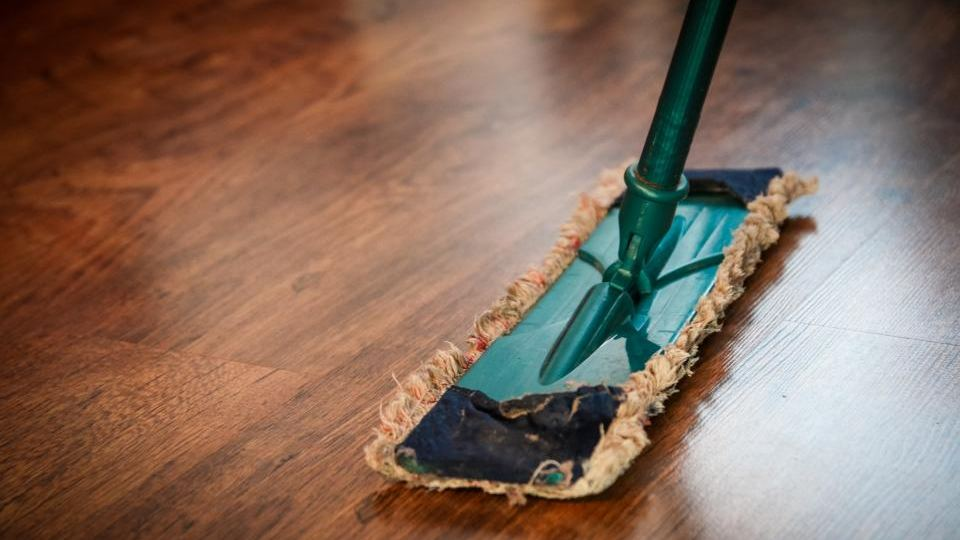

「仕事も子育ても忙しくて、家事まで手が回らない」。そう感じている人は少なくありません。そんなときに頼れるのが、家事代行サービスです。掃除や料理、片付けなどを、プロのスタッフが代わりにやってくれます。
かつては「お金持ちのもの」というイメージがありましたが、今では1時間数千円から気軽に頼めるようになり、共働き世帯を中心に利用が広がっています。この記事では、料金の相場と、初めてでも失敗しない選び方をまとめました。
家事代行でお願いできること
- 掃除：部屋の掃除機がけ、水回り（キッチン・風呂・トイレ）の清掃
- 料理：作り置きのおかずづくり、食事の準備
- 洗濯：洗濯、干す、たたむ、アイロンがけ
- 片付け・整理整頓：散らかった部屋の整理
- 買い物の代行：日用品や食材の買い出し
掃除専門、料理専門など、得意分野が分かれているサービスもあります。
料金の相場

家事代行サービスの料金は、1時間あたり3,000〜4,500円が目安です。これに加えて、交通費や指名料がかかることがあります。
料金は、大きく2つのタイプに分かれます。
- 定期利用：週1回・月2回など、継続して頼む。1時間あたりが割安になる
- スポット利用：必要なときだけ単発で頼む。1回あたりは割高だが、気軽に試せる
まずはスポット利用で試して、気に入ったら定期利用に切り替える、という使い方が失敗しにくくおすすめです。
選び方の4つのポイント
1. 何をお願いしたいか（掃除か、料理か）
サービスによって得意分野が違います。「水回りを徹底的に」なら掃除に強いところ、「作り置きをお願いしたい」なら料理に強いところを選びましょう。
2. 料金体系が明確か
基本料金のほかに、交通費・指名料・鍵の預かり料などがかかることがあります。「1時間○○円」だけでなく、総額でいくらになるかを確認しましょう。
3. スタッフの質と教育体制
研修がしっかりしているか、損害保険に加入しているか（万一ものを壊したときの補償）は、安心して任せるための大事なポイントです。
4. 初回お試しプランがあるか
多くのサービスに、初回限定の割引やお試しプランがあります。まずはこれを使って、相性やサービスの質を確かめるのがおすすめです。
初めて頼むときのコツ
- 最初は在宅で：初回は家にいて、どんな風に作業するかを見ておくと安心です
- お願いしたいことをメモに：事前に「ここを重点的に」と伝えると、満足度が上がります
- 貴重品は片付けておく：トラブル防止のため、現金や貴重品はしまっておきましょう
こんな人に向いています
- 共働きで、平日に家事をする時間がない
- 小さな子どもがいて、掃除や料理に手が回らない
- 親の介護などで忙しく、自分の家事が後回しになっている
- 疲れていて、たまには家事から解放されたい
おすすめサービス比較表
| サービス | 料金の目安 | 特徴 | 申込み |
|---|---|---|---|
| イチオシ家事代行のCaSy | 1時間2,790円(税込)〜 | WEBから1分で予約可能・初回定期割引あり | 料金を見る |
| 2家事代行のキャットハンド | 1時間1,980円〜 | 初回トライアルあり・一人暮らし向けプランあり | 料金を見る |
※料金・内容は各社の公式情報・広告素材の記載をもとにした目安です（2026年10月時点）。最新の料金・条件は必ず公式サイトでご確認ください。
よくある質問
留守中にお願いできますか？
鍵を預けることで、留守中の対応が可能なサービスもあります。ただし初回は在宅をおすすめします。
時間はどのくらい頼めばいい？
一般的には2〜3時間が目安です。水回り全体なら2時間、部屋全体＋料理なら3時間ほどが基準になります。
毎回同じ人が来てくれますか？
定期利用なら、同じスタッフを指名できるサービスが多いです。
まとめ
この記事のポイント
- 家事代行は1時間3,000〜4,500円が相場
- まずはスポット利用やお試しプランで試すのが安心
- 「何をお願いしたいか・料金の明確さ・スタッフの質・お試しの有無」で選ぶ
- 共働き・子育て・介護で忙しい人の、強い味方になる
家事の負担を減らせば、その分の時間を家族や自分のために使えます。「全部自分でやらなきゃ」と抱え込まず、まずは一度、お試しから頼んでみるのも良い選択です。